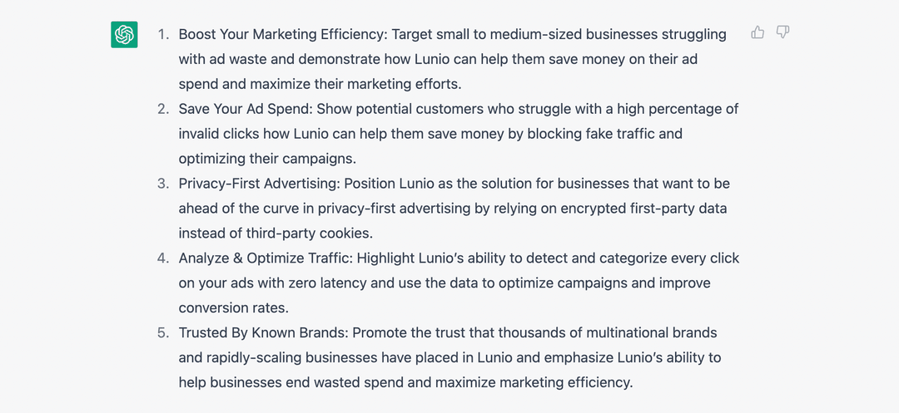
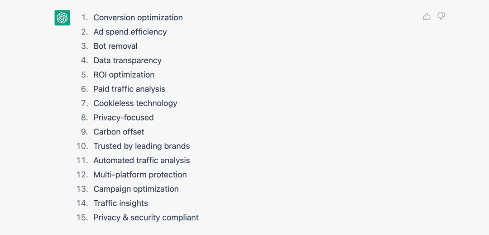
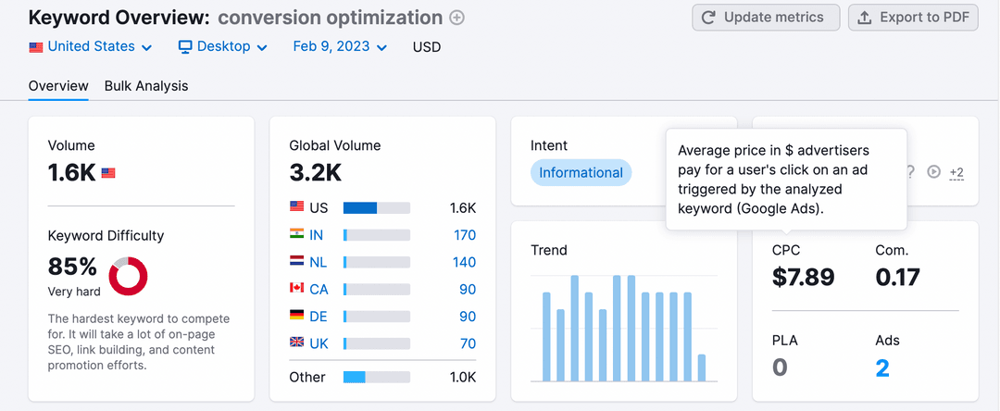
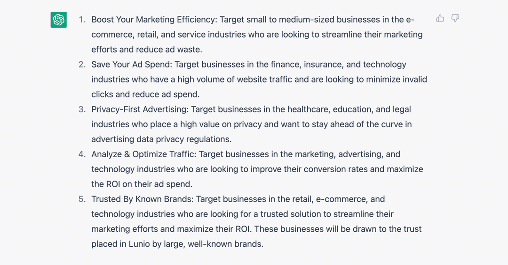
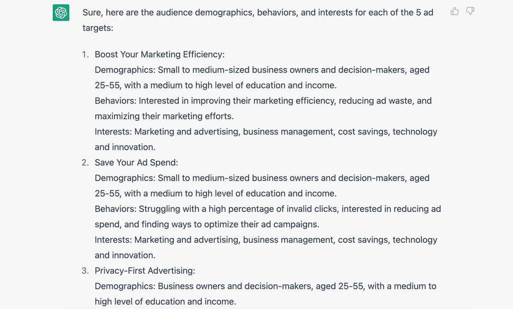
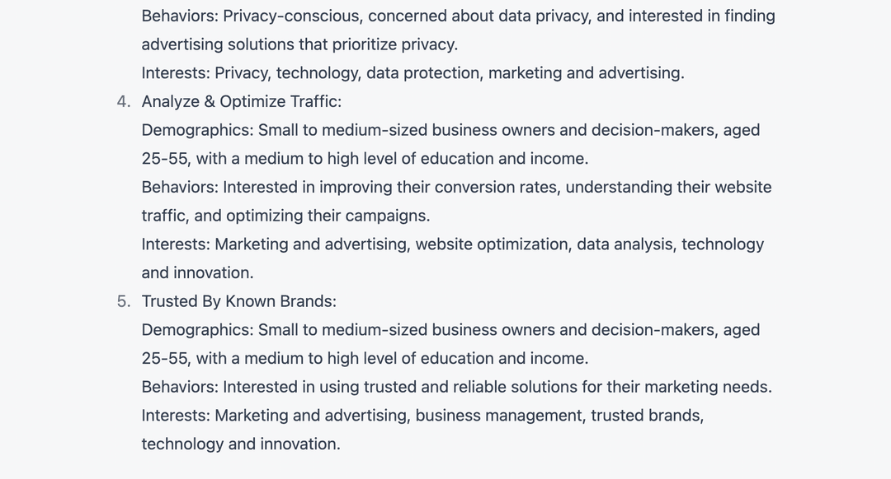
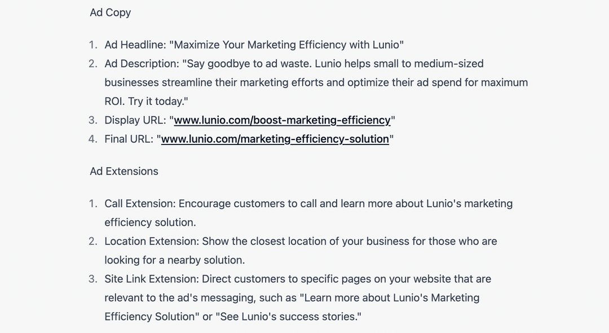
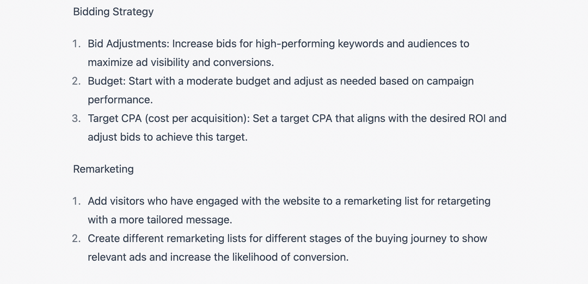

Автор статьи - Джеймс Дини, контент-менеджер
Джеймс - контент-менеджер в Lunio и ежедневный медитатор, который увлекается олимпийской тяжелой атлетикой, хотя у него это и не очень хорошо получается.
Насколько эффективен ChatGPT для PPC?
Если вкратце, то очень эффективен.
Существует множество различных вариантов его использования. При правильном использовании с его помощью есть потенциал повысить эффективность создания необходимого Вашей кампании на порядок. Ведь то, на что раньше уходило два дня кропотливой работы, теперь можно сделать всего за 30 минут.
В этой статье мы опишем семь действий, которые вы сможете автоматизировать при использовании ChatGPT от Open AI для PPC, охватывающих все - от поиска ключевых слов в Google Ads до видеороликов TikTok.
Если Вы выполните все описанные ниже действия, у Вас будет все необходимое для запуска рекламной кампании в платном поиске и социальных сетях. Просто думайте об этом как о простой платформе для максимально быстрого запуска вашей PPC-активности с помощью искусственного интеллекта.
Тем не менее, результаты обработки естественного языка ChatGPT не идеальны. И они, вероятно, не будут в полной мере соответствовать общему тону Вашего бренда. Однако это можно решить, немного отредактировав полученный результат. То, что дает ChatGPT, - это основной фундамент, выполненных 80% работы.
Готовы создать свою следующую PPC-кампанию в рекордно короткие сроки?

ChatGPT для PPC: 10 вариантов использования
Каждый из вариантов использования более подробно рассматривается в приведенных ниже 7 шагах с примерами. Вы сможете пройти весь процесс от начала до конца. Или, в качестве альтернативы, воспользуйтесь ссылками ниже, чтобы узнать больше о вариантах использования именно того, что нужно Вам.
- Создайте 5 идей платных рекламных кампаний для вашего бизнеса
- Создайте 15 релевантных ключевых слов для вашего бизнеса
- Создайте 5 идей целевых клиентов для PPC-кампании
- Создайте демографические данные, модели поведения и интересы на основе данных 5 целей рекламы
- Создайте PPC-рекламную кампанию для Вашего бизнеса
- Подготовьте заголовки и описания PPC-объявлений для Вашей кампании
- Создайте целевую страницу продаж для Вашей PPC-кампании
- Создавайте рекламные идеи в Facebook и Instagram для Вашего бизнеса
- Создавайте видео-сценарии и рекламу для использования в Tik Tok и shorts YouTube
- Создайте видеосценарий для 60-секундной рекламы на YouTube
Внимание: Всегда просматривайте и редактируйте выходные данные ChatGPT
Мы уже отмечали это выше в тексте, но это стоит повторить.
Реальная опасность заключается в использовании ChatGPT с мыслями "установи и забудь". Вы можете использовать Zapier, чтобы подключить его к множеству других маркетинговых платформ и позволить всему работать полностью автоматизированным образом без особого контроля со стороны человека. Однако это подвергает Вас значительному риску по нескольким причинам:
- Фактические ошибки – ChatGPT иногда делает что-либо совершенно неправильно.
- Проблемы с пониманием цели – выходные данные могут не полностью отражать тон Вашего веб-сайта.
- Избыточность – ненужное повторение определенных слов и фраз.
- Соответствие требованиям законодательства – копия рекламы ChatGPT может не соответствовать отраслевым стандартам.
За исключением вопросов соответствия требованиям и возможных юридических проблем, есть несколько обходных путей, которые Вы можете использовать для решения трех других распространенных проблем с выводами ChatGPT:
- Вы можете повысить фактическую точность выходных данных, скопировав и вставив соответствующие данные под Вашим запросом и начиная с модификатора “На основе приведенных ниже данных...”. Вы также можете установить расширение WebChatGPT для Chrome, чтобы добавлять соответствующие веб-результаты к Вашим запросам для получения более точных и актуальных ответов.
- Чтобы ChatGPT соответствовал тону Вашего бренда, скопируйте и вставьте одно из Ваших самых популярных сообщений в блоге вместе с подсказкой: “Извлеките тон бренда, который автор использовал для создания приведенной ниже статьи”. Сохраните результат, а затем добавьте его в качестве модификатора к будущим подсказкам, например “Используйте позитивный и поощрительный тон голоса”.
- Чтобы свести к минимуму повторения, просто добавьте “Избегать повторения” к соответствующим подсказкам.
На недавнем вебинаре мы поговорили с главой отдела платных МЕДИА в компании Click Гаретом Уэстхедом, и он предложил еще одну важную причину чтобы редактировать все Ваши материалы:
Если все будут использовать ChatGPT, существует реальный риск того, что Ваша рекламная копия в конечном итоге будет выглядеть очень похожей на ваших конкурентов. Все будут выглядеть как у остальных, и уникальность Вашего ценного предложения потеряется. Человеческое творчество по-прежнему ценится очень высоко и разумно поддерживать его.
Гарет Уэстхед
Отбросив эти важные предостережения, давайте углубимся в конкретные практические приложения при использовании ChatGPT для PPC.
Мы собираемся использовать Lunio в приведенных ниже примерах в иллюстративных целях. Но эти же действия будут работать для всех идей, если Вы соответствующим образом измените подсказки.
Прежде чем мы продолжим, создайте новый документ в Google и используйте его для записи всех выходных данных ChatGPT, которые Вы генерируете. Затем они могут быть совместно просмотрены и отредактированы Вами и Вашей командой цифрового маркетинга. Это может стать документом, который послужит единой отправной точкой для всех соответствующих ресурсов копирования, связанных с Вашей кампанией.
Совет: Для получения всех последних полезных подсказок ChatGPT добавьте в закладки FlowGPT.
Идеи кампании PPC
Ваша первоначальная идея кампании - это фундамент, на котором строится все остальное. Это задает направление и фокус для всех других Ваших связанных с копированием и креативными ресурсами решений.
Идея должна отражать одно из уникальных преимуществ Вашего продукта или услуги и быть адресована непосредственно одной из Ваших целевых аудиторий.
Но как вы можете сообщить ChatGPT о нюансах Вашего продукта или услуги? Все просто, только скопируйте и вставьте текст с главной страницы Вашего веб-сайта или страницы продукта.
При условии, что копия Вашего сайта хорошо написана и кратко описывает Ваше уникальное ценностное предложение, Вы можете дополнить ее подсказкой для генерации некоторых первоначальных идей PPC-кампании.
Подсказка ChatGPT
- Можете ли Вы предложить 5 идей для платной рекламной кампании на основе этой копии?
- [Вставьте свою домашнюю страницу или копию страницы продукта ниже запроса]
Совет: Перед вставкой копии Вашего веб-сайта запустите ее с помощью этого инструмента markdown, чтобы убедиться, что ChatGPT может понять форматирование Вашей страницы. Используйте этот инструмент и для других подсказок, в которых Вы используете дополнительную информацию, которая была бы полезна, если бы была представлена с сохранением markdown.
Когда мы отправили это приглашение в ChatGPT с копией страницы продукта Lunio, у нас появились эти предложения:
Все это разумные отправные точки. Легко понять, как мы могли бы создать и остальные необходимые для кампании средства обмена сообщениями и креативные решения на основе уже этих 5 различных направлений.
На этом этапе просто скопируйте и вставьте эти расширенные идеи кампании в свой Google Doc, чтобы уже позже доработать и отредактировать.
Исследование ключевых слов
Исследование ключевых слов было фундаментальной частью PPC с самого начала. Правильное их использование имеет решающее значение для успеха в поисковых системах. Но это может занять довольно много времени, если делать это вручную.
Сегодня ChatGPT может выполнить за Вас большую часть тяжелой работы за считанные секунды.
Подсказка ChatGPT
- Создайте 15 ключевых слов [отрасли] на основе копии с Вашего веб-сайта
- [Вставьте копию страницы Вашего продукта под приглашением]
Вот ключевые слова, которые предложили нам использовать в Lunio, используя запрос “Создайте 15 ключевых слов для повышения эффективности маркетинга на основе копии с Вашего веб-сайта”.
Многие из этих ключевых слов подойдут и заслуживают внимания. Но некоторые из них, такие как “компенсация выбросов углекислого газа” и “ведущим брендам доверяют”, не принесут нам того трафика, который мы ищем. В этих случаях ChatGPT выбрала слова и фразы со страницы нашего продукта, которые не являются коммерчески релевантными.
Снова вставьте все эти ключевые слова в свой основной документ Google. Имейте в виду, что даже если они выглядят подходящими, каждое ключевое слово все равно необходимо проанализировать с помощью таких инструментов, как Ahrefs, Semrush или Moz, чтобы убедиться, что они конкурентоспособны и экономически эффективны.
Подключите каждое из них к Вашему инструменту анализа ключевых слов и сравните с другими наиболее эффективными ключевыми словами, прежде чем окончательно добавлять слово. Это гарантирует, что Вы будете генерировать релевантные показы рекламы по доступной цене за клик (CPC).
Таргетинг рекламы и сегментация аудитории
Теперь, когда у нас есть идеи для нашей кампании и целевые ключевые слова, пришло время начать думать о ключевых демографических группах, которых мы хотим охватить с помощью нашей рекламы. Они будут незначительно отличаться в зависимости от характера идеи кампании.
Подсказка ChatGPT
- Можете ли Вы создать 5 идей идеальных целевых клиентов для PPC-кампании на основе сгенерированных Вами ключевых слов и приведенных ниже идей кампании?
- [Вставьте Ваши ранее сгенерированные идеи для кампании]
Вот результаты, которые мы получили:
Что здесь особенно впечатляет, так это предлагаемые отрасли, на которые мы ориентируемся для каждой идеи кампании.
Что касается подхода “Экономия расходов на рекламу”, ChatGPT рекомендует нам сосредоточиться на финансовом, страховом и технологическом секторах, где средняя стоимость клика выше, чем в других отраслях. Это означает, что они будут более чувствительны к экономичным сообщениям по сравнению с PPC.
Аналогичным образом, было правильно определено, что рынки здравоохранения, образования и юридических услуг будут особенно чувствительны к сообщениям о рекламных решениях, ориентированных на конфиденциальность.
Затем Вы можете подробнее изучить каждую целевую аудиторию, попросив ChatGPT подробнее рассказать о соответствующей демографии, поведении и интересах. В связи с предстоящим отказом от использования сторонних файлов cookie в 2024 году будет становиться все более важным включать такого рода сигналы аудитории в таргетинг вашей кампании.
Опять же, этот момент был подчеркнут Гаретом Уэстхедом на нашем недавнем вебинаре:
Вам нужно сформировать глубокое понимание того, кто является вашим идеальным клиентом, основываясь на людях, которые уже покупали у Вас. Затем вы можете использовать эти данные для таргетирования на похожих людей на основе их поведения, ценностей и взглядов на жизнь. Теперь мы знаем, что поведение людей при просмотре веб-страниц и совершении покупок в значительной степени зависит от их взглядов на жизнь. Таким образом, знание этого поможет Вам ориентироваться в принятии решений о Вашей кампании.
Гарет Уэстхед
Подсказка ChatGPT
- Можете ли Вы создать демографические характеристики аудитории, ее поведение и интересы на основе этих 5 целевых показателей рекламы?
Here are the results we got:
 Это разумные предложение, но они не идеальны. Проблемы с повторением и избыточностью в ChatGPT здесь становятся очевидны. Для каждой идеи в кампании предлагается одна и та же демографическая информация: “Владельцы малого и среднего бизнеса и лица, принимающие решения, в возрасте 25-55 лет, со средним и высоким уровнем образования и дохода”.
Это в целом точно в большом количестве. Но это решение недостаточно усовершенствовано, чтобы сделать таргетинг Вашей кампании максимально эффективным. Чтобы улучшить свои демографические профили, обратитесь к своему собственному пулу данных о клиентах от первого лица, чтобы добавить больше детализации и нюансов. Чем конкретнее Вы сможете указать данные, тем лучше.
Поведение и интересы менее повторяющиеся. Хотя опять же, есть значительные возможности для улучшения. Добавьте эти данные в свой документ Google в качестве отправной точки, но убедитесь, что Вы потратите в будущем время на их доработку, прежде чем добавлять в свою компанию.
Копия кампании и целевой страницы
Вот где ChatGPT действительно выделяется. Реклама и копирование целевой страницы традиционно являются наиболее трудоемкими аспектами создания PPC-кампании. Однако с использованием результатов автоматизированного машинного обучения в качестве отправной точки это может сократить временные затраты вдвое.
Имейте в виду, что эта часть процесса чрезвычайно чувствительна с коммерческой точки зрения. Ваша реклама и копия целевой страницы в значительной степени определяют как количество переходов, так и коэффициент конверсии. И очень важно чтобы сообщения используемые для каждого из них соответствовали остальной части Вашего бренда.
Имея это в виду, выделите достаточно времени на доработку результатов копирования рекламы и целевой страницы, чтобы повысить свою производительность. Это шаг в тех рамках, где дополнительный человеческий надзор и творческий подход могут принести дивиденды.
Подсказка ChatGPT
- Можете ли Вы разработать PPC-рекламную кампанию на основе следующей целевой информации?
- [Вставить первоначальную идею кампании]
- [Вставьте соответствующие целевые ключевые слова]
- [Вставьте соответствующие сведения о таргетинге на аудиторию и сегментации]
Вот результаты, которые мы получили:
В дополнение к копии объявления, ChatGPT также предоставляет предложения по всем другим аспектам кампании, включая расширение рекламы, стратегии ставок и идеи ремаркетинга.
Однако данные предложения довольно общие. Если Вы опытный специалист по PPC, то вам, вероятно, не нужна дополнительная информация о расширениях, ставках и ретаргетинге.
Но вот рекламная копия определенно полезна. Если это все, что Вас интересует, Вы можете изменить начальный запрос, чтобы создать больше вариантов для экспериментов.
Подсказка ChatGPT
- Можете ли Вы составить 5 заголовков и описаний PPC-объявлений на основе следующей целевой информации?

Затем Вы можете повторить этот процесс для каждой отдельной идеи кампании, чтобы создать черновики из заголовков и описаний объявлений в Вашем документе Google.
Далее давайте попросим ChatGPT создать копию нашей целевой страницы, которую посетители увидят, когда нажмут на одно из наших объявлений. С помощью приведенной ниже подсказки Вы можете убедиться, что Ваши выходные данные отформатированы правильно, а также дополнены предлагаемыми идеями для создания изображений!
Подсказка ChatGPT
- Можете ли Вы создать целевую страницу продаж, на которую данная PPC-рекламная кампания привлечет трафик? Включите изображения с тегами alt и используйте форматирование markdown
Данные варианты определенно не помешало бы немного улучшить. Например, список преимуществ, предложенный ChatGPT, по сути, повторяет одно и то же 4 различными способами. Приведенная ниже модифицированная версия была бы гораздо более эффективной.
Вместе с Lunio Вы получите выгоду от:
- Оптимизации коэффициента конверсии
- Более чистой аналитики, свободной от поддельных рекламных объявлений
- Доступа к данным о кликах от первого лица
- Непревзойденной точности анализа трафика
Кроме того, одно и предложений не так убедительно, как могло бы быть. “Преобразуйте потраченные впустую расходы на рекламу в рост доходов” гораздо лучше, чем “Повысьте эффективность своего маркетинга с помощью Lunio”.
Графическая реклама в Facebook и Instagram
До сих пор мы сосредоточились в основном на использовании ChatGPT для поисковых кампаний Google. Однако социальные сети тоже являются важной частью PPC. Это самый эффективный способ заинтересовать покупателей, которые еще не знают о Вашем бренде и не обязательно готовы совершить покупку прямо сейчас.
Отчет о настроениях потребителей, опубликованный Merkle в 2021 году, показал тот факт, что 50% респондентов обнаружили, что реклама в социальных сетях помогла им открыть для себя новые продукты и услуги, которые их интересуют.
Итак, каков наилучший способ использовать ChatGPT для создания спроса с помощью платных социальных сетей? Логичной отправной точкой является создание нескольких рекламных идей на основе одного из Ваших предыдущих вариантов.
Подсказка ChatGPT
- Можете ли Вы сгенерировать идею рекламы в facebook и instagram на основе приведенной ниже информации?
- [Вставить первоначальную идею]
- [Вставьте соответствующие сведения о таргетинге на аудиторию и сегментации]
Что здесь интересно, так это то, что вторая рекламная идея, основанная на графике, очень похожа на один из элементов уже представленных на домашней странице Lunio. Довольно впечатляюще, учитывая, что мы не передавали ни одной копии нашей домашней страницы в ChatGPT на протяжении всего этого процесса.

Но поскольку Lunio - это бренд, основанный на иллюстрациях, первая идея с изображением владельца малого бизнеса, держащего ноутбук, нам бы не подошла. Кроме того, если владелец бизнеса будет выглядеть напряженным при просмотре рекламы Lunio на экране, то это, скорее всего, даст неверное представление. Может показаться, что Lunio и является источником его разочарования. Не каждая идея является подходящей.
Вы можете запустить приведенную выше подсказку для каждой первоначальной идеи и сегмента аудитории. Как только у Вас будет несколько приемлемых вариантов, Вы сможете доработать их и начать процесс A / B-тестирования в Ads Manager, чтобы отточить лучшие из них.
Короткая социальная видеореклама
Платная видеореклама стала доминировать в социальных сетях. В 2022 году расходы на социальную видеорекламу выросли на огромные 20,1% до 24,35 миллиарда долларов. А с появлением короткого видеоконтента на TikTok, Instagram Reels и YouTube Shorts становится все более важным добавить этот формат контента в вашу стратегию PPC.
Подсказка ChatGPT
- Можете ли Вы создать видеосценарии для видеорекламы, которые мы могли бы использовать на TikTok и YouTube shorts, основываясь на двух приведенных выше рекламных идеях?

ChatGPT предоставит Вам сценарий озвучки и примерную раскадровку идей для сцен. Потребовалось бы немало дополнительной работы, чтобы преобразовать эту идею в готовое видео. Но основной каркас идеи есть и он даст Вам вдохновение для правильного старта.
Длинная социальная реклама
Под длинной формой мы подразумеваем длину около 60 секунд. Этот формат контента идеально подходит для рекламы с возможностью пропуска через некоторое время. Как пример, это реклама, которая появляется в начале видеороликов YouTube. Подобная реклама идеально подходят для ретаргетинга PPC-кампаний.
Ретаргетинг YouTube позволяет Dам снова обратиться к посетителям, которые перешли на ваш сайт с помощью платного поиска и социальной рекламы, но перешли без моментальной покупки. И цифры показывают, что это особенно эффективно:
- У посетителей сайта с ретаргетингом вероятность конверсии на 43% выше
- Ретаргетинг может увеличить поиск по названию бренда на 1,406% - из шести различных стратегий размещения рекламы ретаргетинг вызвал наибольший подъем
Если вы уже платите за трафик через поиск Google и социальные сети, имеет смысл извлечь выгоду из этих посещений с помощью ретаргетинга YouTube. Но сначала вам нужна 60-секундная реклама.
Подсказка ChatGPT
- Можете ли Вы сгенерировать видеосценарий для 60-секундной рекламы на YouTube на основе комбинации двух вариантов сценария, которые сгенирирован выше?

Мы не включили полный сценарий выше, так как он довольно длинный. Но Вы уже понимаете примерную картину. Были взяты элементы из двух сценариев краткой формы и объединены для создания рекламы, которая, вероятно, найдет отклик у владельцев бизнеса, заинтересованных в повышении эффективности маркетинга.
Однако концепция немного “плавает”. Ей не хватает оригинальности и творческого чутья. Скорее всего, это обеспечило бы приемлемые показатели кликов и конверсии при доработке и профессиональном качестве продукции. Тем не менее, это уже впечатляет.
Сократите напрасные расходы на рекламу в поиске и социальных сетях
Объединив все 7 описанных выше шагов, Вы получите все необходимое для запуска эффективной PPC-кампании менее чем за 30 минут. Это представляет собой значительное повышение эффективности.
Но всегда существует одно и то же предостережение: это решение не идеально. Относитесь к ChatGPT как к не по годам развитому стажеру – приготовьтесь потратить некоторое время на анализ полученной работы и будьте готовы к ошибкам. Если Вы этого не сделаете, Вы рискуете поплатиться снижением эффективности кампании и потенциальными юридическими проблемами.
И если Вы более эффективно распоряжаетесь своим временем, Вам также следует более эффективно расходовать средства на рекламу. Автоматически устраняя все поддельные рекламные объявления, Lunio преобразует потраченные впустую средства в дополнительные конверсии и продажи во всех рекламных сетях, включая Google, Meta, LinkedIn, TikTok и другие.

Просто откройте скрипт отслеживания с помощью выбранного Вами менеджера тегов, и пусть проактивные самообучающиеся алгоритмы Lunio анализируют и фильтруют Ваш платный трафик, чтобы направить 100% вашего бюджета на реальных клиентов.
Хотите увидеть Lunio в действии и узнать, во сколько обходится вашему бизнесу поддельный трафик?
Получите демо-версию и бесплатную пробную версию